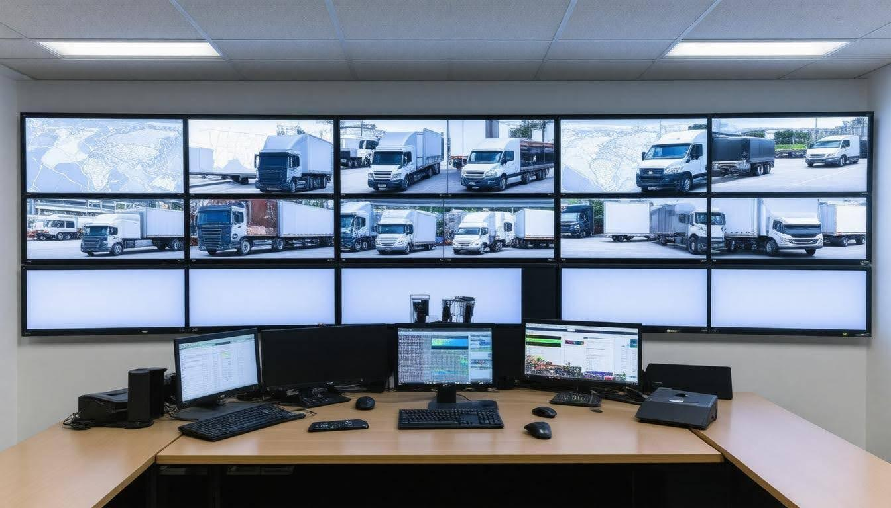

Managing a fleet of vehicles may seem straightforward, but the reality is filled with challenges that can quickly become complicated. From soaring maintenance costs to the pressure of optimizing routes, fleet operations require more than just a set of wheels—they demand smart strategies. Whether you’re managing a few delivery vans or a large number of trucks, knowing how to maintain your assets and keep everything running smoothly is crucial. In this article, we'll dive into essential tips and best practices for managing fleet assets efficiently and cost-effectively, empowering you to navigate the road ahead with confidence.
The best practices for managing fleet assets include implementing a comprehensive maintenance database to track service history, utilizing driver checklists for vehicle inspections, and investing in preventative maintenance strategies to address issues before they escalate. Additionally, regular logging of mileage and fuel consumption is essential to identify usage patterns and manage operational costs effectively.
Fleet management software is more than a digital tool; it's an essential partner in managing a fleet efficiently. When you decide to incorporate this technology into your operations, it can significantly enhance decision-making and operational efficiency. But before diving headfirst into a software solution, there are crucial steps to follow.
The first step in implementing fleet management software is to identify your specific needs. Ask yourself some important questions: How many vehicles do you manage? What types of assets require monitoring? Are you focused on driver behavior, maintenance schedules, or cost tracking? Knowing what you want to achieve will save you time later on and ensure that the software you ultimately choose aligns with your objectives. This initial assessment serves as the foundation for everything that follows.
Once you've assessed your needs, the next logical step is exploring what options are available to you.
With a clear understanding of your requirements, embark on researching various software solutions. Start by exploring popular options like Fleetio or AUTOsist, which offer a mix of features tailored to different operational needs. Reading user reviews can provide valuable insights into how well each platform performs in real-world situations. Additionally, don’t hesitate to request demos—seeing the tool in action helps clarify its suitability for your fleet.
Research should also extend beyond individual product features; consider reaching out to other fleet managers for their recommendations and experiences. Their firsthand accounts can guide you toward or away from potential pitfalls.
Once you have narrowed down your choices based on research, it’s time to put one of these solutions into action.
Now comes the phase of implementation and integration, where careful planning is key. Collaborating with your IT department can facilitate smooth integration of the chosen software with existing systems in your fleet operation. This process may include migrating data from older systems and ensuring everyone involved has access to training resources. Often, addressing any staff concerns about new technology during this stage can ease transitions as well.
"A seamless rollout not only minimizes disruptions but also enhances user acceptance and maximizes product utility."
However, selecting software isn’t just a one-time event; it requires ongoing attention.
Finally, monitoring performance regularly after implementation cannot be overstated. Initially set targets based on your earlier assessments, then keep track of how well the software meets those expectations. If you find gaps in performance or identify new needs as your fleet evolves, seek updates or additional features that could improve efficiency further. This proactive approach ensures that you harness the full potential of your fleet management software over time.
As we explore the intricacies of fleet management practices, the focus shifts towards advanced techniques that predict maintenance needs before they become issues, ensuring smoother operations ahead.
Preventing problems before they occur is not just a wise philosophy; it’s a transformative approach that can significantly reduce fleet downtime and ultimately save costs. Imagine having the ability to anticipate when a vehicle might experience issues rather than reacting to breakdowns as they happen. This foresight allows fleet managers to schedule maintenance proactively, optimizing vehicle performance while minimizing operational disruptions.
One of the most powerful tools for achieving this is data analytics. By monitoring a range of variables such as engine hours, mileage, and driving patterns, businesses gain invaluable insights into their fleet's health. Analyzing telemetry data collected from vehicles helps forecast when specific parts may fail. Through advanced algorithms, it becomes possible to identify trends and predict maintenance needs with remarkable accuracy. Practical applications have proven successful across various industries.
"Data is the new oil." This popular saying underscores how valuable insights derived from careful analysis can fuel the efficiency and sustainability of fleet operations.
Telemetry data not only enhances prediction capabilities but also improves the decision-making process for maintenance schedules. Fleet managers can prioritize repairs based on real-time vehicle conditions instead of relying solely on routine checks or historical averages. For example, if sensors indicate excessive wear on brake pads in a particular vehicle, immediate action can be taken before they lead to more significant issues or safety concerns.
Implementing these predictive maintenance techniques can produce impressive results—an average decrease in maintenance costs by up to 20%. However, getting started may require an initial investment in both technology and training. Organizations must equip their vehicles with sensors and invest in software that consolidates and analyzes the vast amounts of data generated. Training staff to interpret this data effectively is equally crucial; skilled personnel are vital for leveraging insights.
It's no surprise companies like FedEx have adopted predictive maintenance strategies to keep their fleets operating smoothly. Their use of sensors to monitor engine health exemplifies how organizations can engage technology effectively to prevent unforeseen breakdowns.
Having examined the transformative potential of predictive maintenance, we now turn our focus toward strategies aimed at managing aging vehicle assets efficiently while optimizing overall expenses.
The key to optimizing fleet performance lies in understanding when and how to replace vehicles effectively. Timing is critical, as replacing vehicles at the right moment can yield maximum value and prevent costly repairs that arise from prolonged usage. Research from the American Transportation Research Institute suggests that vehicles should generally be replaced every 4-5 years based on how they are used. This guideline helps ensure that you are not holding onto a vehicle that is becoming less reliable or more expensive to maintain due to age-related wear and tear.
Consider this: if you've ever kept an old smartphone long after its prime, you've likely experienced frustrating slowdowns and frequent crashes. Each repair reminded you how outdated the equipment was compared to newer models equipped with all the latest features—features designed explicitly to boost efficiency and reliability. This analogy applies directly to your fleet; holding onto an aging vehicle may initially seem cost-effective, but it can lead to unexpected repairs and downtime that ultimately add up.
Beyond timing, the decision between leasing and buying heavily influences your overall fleet costs.
When evaluating whether to lease or buy your fleet vehicles, consider both your current budget and long-term financial goals. Leasing often presents a lower initial cost, meaning you can acquire newer fleets without a significant upfront investment. However, this flexibility comes with ongoing payments that might accumulate over time, potentially eclipsing the costs of owning vehicles outright. On the other hand, purchasing may drain more resources at first but frequently leads to greater long-term savings after the vehicle is paid off.
Many organizations leverage a mix of leasing and buying strategies, adjusting their methods based on operational needs and budget constraints. For instance, UPS has successfully developed a blended approach, opting to purchase larger trucks for their longevity while leasing smaller vehicles that may have varied usage rates. This strategy allows UPS to adapt dynamically based on vehicle performance and individual operational requirements.
As these decisions shape not only the present state of your fleet but its future as well, continuous monitoring of vehicle performance becomes key. By staying vigilant about vehicle conditions and understanding the interchange among operating expenses, maintenance, and opportunities for replacement, fleet managers can create a disciplined cycle of fleet optimization that supports sustained efficiency over time.
Remember: The best strategies are those that align closely with your operational needs while making room for adaptability in a fluctuating market.
With these foundational strategies in mind, let's explore how to elevate your fleet's capabilities further through advanced performance metrics and innovative management techniques.
To truly harness the potential of your fleet, you must consider both operational efficiency and the human factor. Fleet performance optimization involves maximizing vehicle usage while minimizing fuel and maintenance costs. Imagine a scenario where every minute saved on the road translates to cost savings and increased productivity. This dream can be a reality with thoughtful strategies.
One of the most significant areas for improvement lies in fuel efficiency. Utilizing advanced telematics is akin to having a coach in the driver’s seat, monitoring fuel consumption in real time. Many fleet operators have successfully implemented eco-driving practices, which focus on smooth acceleration and braking techniques that significantly enhance fuel savings. For instance, studies show that by implementing these driving techniques, operators can cut fuel usage by approximately 15%, offering tangible evidence of efficiency gains.
Furthermore, integrating technology like real-time analytics into daily operations enables immediate adjustments to driving habits based on data insights. Fleet managers equipped with this kind of information can make informed decisions about which behaviors reduce waste and maximize performance.
Of course, another pillar of optimizing fleet performance is route optimization. It’s crucial to leverage route planning software that provides the most efficient paths for your drivers. By streamlining routes, you not only reduce fuel consumption but also minimize travel time. Consider how UPS has revolutionized its operations through its innovative route optimization algorithm; they save millions in fuel costs annually simply by ensuring their drivers take the most effective routes.
Optimizing fleet performance goes beyond technology and processes; it’s all about investing in your drivers as well.
Training your drivers should never be an afterthought. Implementing training programs isn’t just about safety; it significantly impacts overall fuel efficiency and vehicular wear-and-tear, too. Think of your drivers as the frontline defenders of efficiency; their driving behavior directly affects both costs and service quality.
It’s beneficial to develop training modules that focus on both individual skill enhancement and vehicle operation best practices. Regular workshops, refresher courses, and feedback loops empower your team while fostering a culture of continuous improvement. This ongoing education ensures that your drivers remain knowledgeable about new techniques and technologies available for enhancing their performance.
As we turn our attention to further optimizing your fleet, maintaining your vehicles regularly plays an equally vital role in sustaining high efficiency levels.
Regular maintenance not only protects against costly repairs but also guarantees that each vehicle operates at its peak performance level. This proactive approach minimizes unexpected breakdowns while extending the life of your fleet assets. Scheduling routine checks for oil changes, tire rotations, and brake inspections will significantly reduce downtime and associated costs.
Consider using fleet management software to automate maintenance reminders based on vehicle usage and manufacturer recommendations. It's a simple yet powerful tool to keep track of maintenance schedules without burdening managers with manual updates.
To ensure continual improvements in efficiency within your fleet operations, a commitment to ongoing enhancement remains critical.
Monitoring operations regularly allows managers to adjust strategies based on newfound insights from performance metrics. Fleet optimization isn’t a one-time project; it requires regular evaluations of progress against defined benchmarks. By addressing inefficiencies as they arise—whether it’s adjusting driver schedules or evaluating routing algorithms—you can continuously refine operations toward achieving maximum productivity.
The path to optimizing fleet performance includes many facets: enhancing fuel efficiency through advanced technologies, utilizing route optimization software, empowering drivers with training, ensuring consistent vehicle maintenance, and embracing a philosophy of continuous improvement. Each element interconnects in ways that lead to significant overall benefits for any fleet operation.
This approach prepares you for what comes next—enhancing driver skills through focused training methods that underscore operational excellence.
Well-trained drivers are essential for maintaining a high-performing fleet. They safely navigate the streets, ensuring deliveries are made on time and efficiently. However, mere hiring isn’t enough; companies must invest in comprehensive training programs to instill safe driving practices, enhance operational efficiency, and promote regular vehicle inspections.
To cultivate an environment of safety and efficiency, you can develop structured training programs that provide your drivers with the necessary skills and knowledge. For instance, a well-rounded program should cover topics like defensive driving techniques, efficient route planning, fuel management best practices, and the importance of pre-trip inspections. Regular hands-on workshops or simulations can reinforce these concepts, making the learning process engaging and practical.
A logistics manager from DHL emphasized, "Our comprehensive driver training reduced accidents by 30% and improved overall efficiency." This success story highlights how structured training can affect both safety records and the bottom line.
With a solid foundation set in place through training, the next step involves monitoring.
Utilizing telematics is an excellent way to monitor key driving behaviors. By employing advanced tracking systems that quantify metrics such as hard braking, rapid acceleration, excess idling, and adherence to speed limits, fleet managers gain invaluable insights into their drivers' performance. Real-time data allows management to provide immediate feedback to drivers—an essential component in fostering a culture of accountability.
Imagine receiving alerts when unsafe driving patterns emerge; fleet managers can then act swiftly by providing additional training or resources.
Moreover, studies indicate that ongoing feedback can lead to significant improvements in driver performance:
Once the training program is established and monitoring tools are in place, the focus shifts to assessing performance metrics and implementing necessary changes for continuous improvement.
Regularly assessing your fleet management practices ensures that you are aware of current performance metrics and ready to adapt to evolving business needs. This continuous loop of evaluation and adjustment keeps operations running smoothly and efficiently, ultimately leading to cost savings. One essential component in this process is tracking Key Performance Indicators (KPIs) that provide clear insights into your fleet’s performance.
Each KPI tells a different story about your fleet's health. For example, if a fleet is consuming more fuel than it should, it may signal that certain vehicles are not properly maintained, or routes could be optimized better. Similarly, maintenance costs can indicate whether preventative practices are genuinely mitigating larger issues down the road, saving you significant amounts of money.
A practical approach is to monitor these metrics over time. Picture a logistics manager meticulously tracking vehicle utilization rates across their fleet; by doing so, they might discover that some vehicles sit idle while others strain under demands. This realization can provoke a strategic shift in vehicle assignments, ensuring all assets contribute efficiently to productivity.
To make data truly actionable, it’s imperative to analyze collected data regularly. This analysis can pinpoint areas where strategies may need fine-tuning or revision. If vehicle utilization rates consistently lag behind the average, it may indicate that your fleet size is disproportionately large for current demand. Assessing fleet size can lead to divesting underperforming vehicles or acquiring new ones that meet operational needs more effectively.
The goal here is not merely to collect data but to harness information to drive meaningful change. By actively analyzing trends and patterns within your KPIs, you can continuously refine processes—resulting in improved driver performance through enhanced training programs or more effective vehicle scheduling systems.
Implementing this cycle of measurement and adjustment in fleet management results in a dynamic operation that adapts proactively rather than reactively. With diligence and an open mind toward improving practices, companies can sustain efficiency and thrive in a competitive environment.
Adopting these best practices for managing fleet assets not only optimizes operations but also contributes significantly to overall cost-effectiveness and productivity.